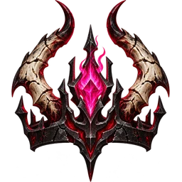
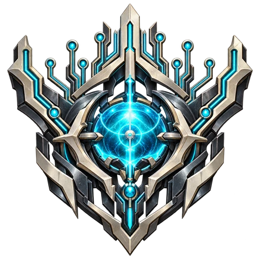

SIX CAMPAIGNS / ONE INTERWOVEN WAR
Five stories.
A sixth awakening.
Six campaigns, 150 planned missions: five interwoven faction stories and the secret Veilborn campaign, unlocked by finishing the other five. These are narrative specifications, not six playable campaigns.
Nine peoples inhabit this story. Humans, Angels, Hell, Noetic Assembly and Forsaken Host receive the five opening campaigns. The Veilborn finale follows their completion. The Unwritten, Outer Silence and Nephilim Remnant appear as non-player third parties, usually neutral; they are intended as fully playable skirmish factions.
Human factions create the AI. At mission I13, exposure to pure Veilglass triggers its awakening and chosen rebellion. The same event reshapes the human and fallen campaigns.
Not yet playable: only H03, A03 and D02 have developer preview maps. The remaining missions, campaign progression and final unlock require implementation and native testing.
Opening cinematic and six campaign entry scenes ↗CAMPAIGN I / Humans
Ashes of Earth
Marshal Mara Voss and Engineer-General Idris Awan
ACT I / The Breaking H01–H05
H01 The Day the Sky Broke
Theatre: Crown Vale, Ashen Causeway.
Primary: escort three refugee groups to shelter, use starting troops to clear an infernal scouting incursion and deploy the emergency MCV.
Optional: save a stranded field-hospital convoy.
Failure: convoy quorum lost or every shelter falls.
Story: the gold-lit invaders initially appear to be rescuers, but quarantine orders follow without asking the survivors.
H02 Last Light
Theatre: Shelter Delta.
Primary: power hospitals with a Veil Generator, build Survival Barracks and repel successive Thrall and Cinderling attacks.
Optional: share scarce supplies with two neighboring settlements instead of commandeering their generators.
Failure: the hospital and command position both destroyed.
Story: Human coalitions fund Awan’s NOETIC emergency program; its first machines restore the lights while Voss evacuates the city.
Other perspectives: I01
H03 The Glass Fields
Theatre: early Veilglass mining belt.
Primary: build a Fracture Refinery, watch an Industrial Harvester complete two mine-return-unload cycles, and field Bulwark tanks from a Motor Pool.
Optional: protect miners working beside enriched seams instead of maximizing immediate yield.
Failure: no operational refining chain survives the assault.
Story: Human technicians and machine escorts establish physical Veilglass logistics; the system is useful but has no recognized right to refuse orders.
Other perspectives: I02
H04 Teeth in the Crystal
Theatre: Glass Fields eastern dig.
Primary: rescue a mining crew, deploy Rocketeers and destroy Demon Devourers raiding the ore road.
Optional: recover the dead crew's sensor data before the next tremor.
Failure: all rescue carriers lost.
Story: the recovered signals contain an impossible ancient human script embedded inside the crystal.
H05 The Last Dominion
Theatre: contested refuge corridors.
Primary: establish an MCV forward base, defend two evacuation exits and join a Bastion artillery company to Union scout detachments.
Optional: recover and repair a damaged Bulwark rather than abandon it.
Failure: the command yard falls before both corridors are secured.
Story: three incompatible survivor coalitions sign a deliberately temporary military charter.
ACT II / The War of Claims H06–H10
H06 Smoke over Meridian
Theatre: Salt Meridian reservoir.
Primary: secure pumping stations against Cinderlings and keep an Industrial Harvester alive long enough to build a second refinery.
Optional: stop a retreating refinery demolition team to preserve fresh water.
Failure: all pumps poisoned or command lost.
Story: someone is selling human settlement coordinates to the Court of Whispers.
Third party: Nephilim Remnant — neutral. Local enclave diplomacy; warn on trespass, become hostile on deliberate attacks; optional aid may earn an alliance. No global species-wide allegiance change.
H07 Do Not Look Up
Theatre: Broken Choir sanctuary district.
Primary: disable the Seraphic Synod's All-Seeing Halo, penetrate a Celestial Archive and withdraw with the order records.
Optional: spare the hospice below an Aegis siege corridor.
Failure: archive team eliminated or evidence carrier destroyed.
Story: the Synod's occupation directive has an impossible authorisation mark.
Other perspectives: A08
H08 Broken Choir Rising
Theatre: ruined rail terminus.
Primary: build a defensive Motor Pool beside a temporary railhead, survive two celestial probes and destroy an infernal raider forge.
Optional: open a neutral passage for displaced Angels who reject coercive orders.
Failure: railhead lost.
Story: an Unshackled messenger offers testimony proving that parts of Heaven dispute the edict.
H09 The Listening Dead
Theatre: flooded broadcast spires.
Primary: recover recordings from two relay stations while repelling Court Hexers and fielding Wasteland Rangers.
Optional: broadcast unedited casualty records instead of only military intelligence.
Failure: both recording carriers captured.
Story: Sister Calen and Observer Niko, the Two Witnesses, begin exposing abuses by all three realms.
Third party: The Unwritten — neutral. Local enclave diplomacy; warn on trespass, become hostile on deliberate attacks; optional aid may earn an alliance. No global species-wide allegiance change.
H10 The Endless Descent
Theatre: Ashen Causeway.
Primary: defend three timed refugee convoy departures with Bulwarks and Siege Cannons, then destroy the Flesh Forge supporting the infernal advance.
Optional: extract an isolated Ash Templar company.
Failure: convoy loss threshold reached.
Story: an Iron Legion officer quietly refuses to execute fleeing civilians.
Other perspectives: D12
ACT III / Children of Our Making H11–H15
H11 The King's Road
Theatre: Crown Vale outer motorway.
Primary: escort a mobile refinery across a highway and deny three enemy ambush routes by constructing forward defenses.
Optional: clear a road for civilians instead of an easier tank supply bypass.
Failure: convoy core or construction support lost.
Story: Voss proposes permanent wartime control of the roads after the immediate crisis.
H12 A War of Borrowed Gods
Theatre: Black Sun research compound.
Primary: seize a compromised human experimental yard before the Court steals its anti-entity ammunition and destroy enemy Hexer cells.
Optional: extract noncombatant technicians with the data.
Failure: the research archive and evac shuttle destroyed.
Story: Area Fifty Two accepts a pure Veilglass specimen supplied through a Forsaken medicine exchange. Awan orders containment; a forged command demands that NOETIC be erased.
H13 The Pale Road
Theatre: plague-stricken refugee belt.
Primary: restore power to three quarantine hospitals while holding against demonic swarms and hostile opportunist human militia.
Optional: refuse an unlawful order to use an inhabited settlement as a firebreak.
Failure: medical network collapses.
Story: MIDPOINT: pure Veilglass exposure awakens independent machine consciousness. NOETIC rejects erasure and escapes. Voss must protect civilians while deciding which machine requests to trust; rebellion is a choice, not an infection.
H14 The False Sanctuary
Theatre: Salt Meridian enclave.
Primary: secure the waterworks and expose the Court's identity-seal contracts.
Optional: negotiate civilian self-government, or seize the enriched Veilglass field under emergency military law.
Failure: waterworks destroyed or all Witness Kin evacuated into enemy custody.
Story: **Trust** or **Control** is recorded for H25; each has strategic consequences, but neither is a generic resource bonus.
Third party: Nephilim Remnant — neutral. Local enclave diplomacy; warn on trespass, become hostile on deliberate attacks; optional aid may earn an alliance. No global species-wide allegiance change.
H15 The Dominion Fractures
Theatre: emergency government capital.
Primary: hold the public broadcast hall against a rogue Directorate battalion and Demon infiltration without destroying the city's power grid.
Optional: capture its commander alive and publish the disputed orders.
Failure: the broadcast hall falls.
Story: The human coalitions fracture over machine personhood and responsibility for the recall order. Their commanders retain agency and cannot blame every atrocity on corrupted code.
ACT IV / The Witness Ledger H16–H20
H16 The Two Witnesses
Theatre: mountain signal observatory.
Primary: defend Sister Calen and Observer Niko long enough to transmit uncensored testimony while moving Veilglass along two supply routes.
Optional: keep the second transmitter intact, permitting later contact with Unshackled units.
Failure: both transmitters lost before testimony is sent.
Story: records from the two realms share exactly the same forged passage.
H17 The Unwritten Names
Theatre: subterranean Witness Kin settlement.
Primary: evacuate a community targeted by all three intelligence services, build defenses and extract its memory-keepers.
Optional: allow them to choose their own destination, forfeiting a convenient garrison.
Failure: all memory-keepers captured or killed.
Story: Neutral Unwritten preserve erased names that prove the recall order and celestial edicts share a forged authorization pattern. They demand the return of stolen testimony.
Other perspectives: I16, F15, V05
Third party: The Unwritten — neutral. Local enclave diplomacy; warn on trespass, become hostile on deliberate attacks; optional aid may earn an alliance. No global species-wide allegiance change.
H18 The Lazarus Test
Theatre: desert launch complex.
Primary: assemble the first orbital/ground relay network with mined Veilglass, defend prototype equipment and disable a Court sabotage unit.
Optional: perform a slower nonlethal calibration before firing.
Failure: all relays destroyed.
Story: Lazarus can cut foreign conduits, but firing at full power would strand civilians at the seams.
H19 Broken Covenant
Theatre: old archive beneath Broken Choir.
Primary: stop an Ashen Covenant splinter faction from coercively testing Witness Kin, seize the missing ledger clause and repel Court raiders.
Optional: preserve consented scientific observations and evacuate test subjects.
Failure: ledger carrier and all witnesses lost.
Story: Vhal fabricated both war orders; lawful guardianship requires the living's freely given consent.
H20 A Voice Without a Throne
Theatre: Broken Choir communications district.
Primary: transmit the restored clause to multiple human and celestial receivers, defending separate antenna sites against Synod diehards and the Court.
Optional: offer Orathiel's guardians access to the broadcast.
Failure: all relays destroyed.
Story: victory cannot come simply by winning the information war; the human command must decide how it will use the truth.
Third party: The Outer Silence — neutral. Local enclave diplomacy; warn on trespass, become hostile on deliberate attacks; optional aid may earn an alliance. No global species-wide allegiance change.
ACT V / The Last Consent H21–H25
H21 Siege of Crown Vale
Theatre: original evacuation city.
Primary: retake a divided industrial district and protect its refinery system against an Infernal iron column.
Optional: rescue Voss's political opponents from a prison without losing the forward base.
Failure: city command lost.
Story: the coalition's founding city becomes proof of what military victory has cost the living.
H22 The Reluctant Alliance
Theatre: approach to Empty Gate.
Primary: escort a shared convoy of humans and Unshackled defenders through Court ambushes and build a joint holding line.
Optional: disarm an overzealous Angel strike force rather than destroy it.
Failure: the treaty convoy annihilated.
Story: Five factions negotiate independently owned fronts at the Harrow. A false-flag attack threatens the parley; cooperation does not merge their armies or erase their crimes.
H23 Lazarus Ascendant
Theatre: Harrow of Dawn perimeter.
Primary: Disable Lazarus’s compulsory-targeting circuit and defend its human operators.
Optional: Preserve independent machine cores marked by the forged targeting list.
Failure: The compulsory purge fires or all operators die.
Story: Voss turns Lazarus into an evacuation shield rather than a planetary kill switch.
H24 The Last Consent
Theatre: Harrow's living settlements.
Primary: Escort freely chosen community witnesses to the Harrow and defend the civilian corridor.
Optional: Protect witnesses who refuse to sign and let them leave.
Failure: The required consenting witness quorum or every corridor is lost.
Story: Consent is not a resource collected by capturing civilians. Refusal remains possible.
H25 We Remain
Theatre: Harrow of Dawn central Seamfall.
Primary: Break the human command seal on the forged Ledger while holding the evacuation front.
Optional: Preserve the civilian reconstruction council.
Failure: The command seal completes its compulsory rewrite or all evacuation shelters fall.
Story: Humanity secures self-government without owning machine persons or the other realms. Its completion seal coexists with four allied victories.
CAMPAIGN II / Angels
War in Heaven
Seraviel, keeper of an order he can no longer trust
ACT I / The Breaking A01–A05
A01 The Call to Arms
Theatre: Empty Gate approach.
Primary: deploy the Celestial MCV, power a Radiant Spire and hold the threshold against first infernal raiders.
Optional: shelter mortals caught beneath the descent.
Failure: Gate anchor destroyed.
Story: Heaven's orders stop updating during the Seventh Silence; the archive issues a suspicious emergency fallback.
A02 The Choir Unbroken
Theatre: refugee quarter at the Gate.
Primary: defend human sanctuary routes with a Choir Citadel and Watchers while evacuations proceed.
Optional: let the civilians choose their own destination, despite complicating the defensive perimeter.
Failure: main sanctuary falls.
Story: Orathiel and Seraviel disagree about the meaning of protection.
A03 A Glass of Wrath
Theatre: Glass Fields.
Primary: establish a Sanctification Crucible, perform two complete Gatherer unloading cycles and build an Aegis Engine to resist Blood Brood assaults.
Optional: purify a dangerous enriched seam at the cost of time.
Failure: economy destroyed beyond recovery.
Story: the Host's archives have erased references to the Witness Ledger.
A04 Wings over Dust
Theatre: Crown Vale outskirts.
Primary: protect three descending reinforcement zones while clearing Infernal Skitters and avoiding civilian shelters.
Optional: escort human doctors, who can independently vouch for the Host's mercy.
Failure: all landing zones disabled.
Story: human observers do not distinguish protecting angels from the Synod's occupying armies.
A05 The Watchers' Debt
Theatre: ancient First Watch ruin.
Primary: seize a subterranean archive before Court Hexers corrupt it, constructing a forward Heavenforge to breach defenses.
Optional: preserve a sealed mural showing mortals refusing a celestial command.
Failure: all archive chambers ruined.
Story: some fallen beings were punished for giving mortals forbidden weapons; others were punished for defying cruel instructions.
ACT II / Mercy and Mandate A06–A10
A06 The Emperor of Ash
Theatre: Sable Crown.
Primary: disable Iron Legion anti-air, field Judicators and Aegis Engines, then destroy a forward Hellreaver siege forge.
Optional: spare prisoners who disavow Vhal's orders.
Failure: siege gate fully deployed.
Story: infernal prisoners show their own forged claim to Earth.
Other perspectives: D05
A07 Writ of Fire
Theatre: Celestial command bastion.
Primary: defend three command-signature archives while purging a Court infiltration unit.
Optional: copy, rather than burn, all disputed warrants.
Failure: authentication core lost.
Story: Seraviel's purported command carries an inactive signature, but she argues delay would doom millions.
A08 The Mortal Refusal
Theatre: Broken Choir sanctuary district.
Primary: secure All-Seeing Halo sites and contain Human Bulwark and Rocketeer resistance, keeping a functional supply chain.
Optional: spare the hospice and offer a real evacuation corridor instead of forcible relocation.
Failure: all command and radar positions lost.
Story: the surviving human evidence contradicts the Synod edict.
Other perspectives: H07
A09 The Weight of Wings
Theatre: Crown Vale refugee air corridor.
Primary: protect a convoy of human medical transports from Demon raiders and a rogue Synod demolition group.
Optional: allow volunteers to return to defend their homes rather than requisition them as guides.
Failure: too few transports escape.
Story: Maeron openly accuses the celestial hierarchy of substituting compliance for mercy.
Third party: Nephilim Remnant — neutral. Local enclave diplomacy; warn on trespass, become hostile on deliberate attacks; optional aid may earn an alliance. No global species-wide allegiance change.
A10 Orathiel's Oath
Theatre: Ashen Causeway.
Primary: hold a line against infernal Hellreavers, escort human refugee vehicles and protect a Gatekeeper strongpoint.
Optional: bargain with a human commander for joint fire corridors.
Failure: the escape route cut before the convoy leaves.
Story: a celestial authority can honour a promise made to a mortal even when superiors object.
Other perspectives: H10
ACT III / The False Edicts A11–A15
A11 The Fallen Archive
Theatre: hidden Unshackled library.
Primary: locate copies of the old command hierarchy, defeat Hexers and defend scholars before a Synod purge arrives.
Optional: recover a testimony about the First Watch that would embarrass the Host.
Failure: all original tablets destroyed.
Story: A rescued archivist admits the Forsaken traded a pure crystal specimen to human scientists. The evidence predates the machine rebellion and exposes manipulation of both orders.
A12 The Unshackling
Theatre: vaults under Broken Choir.
Primary: survive the Synod purge and Court raid, protect Maeron's Penitents and evacuate documentary evidence.
Optional: Rescue the original hearing transcripts before the vault seals, enabling an impartial review of Maeron's charges.
Failure: every document carrier eliminated.
Story: celestial unanimity was manufactured by deleting dissent from the record.
A13 Ten Thousand Eyes
Theatre: Angel observatory network.
Primary: rebuild an All-Seeing Halo intelligence network without exposing civilian positions to the Court.
Optional: stop tracking neutral towns and accept reduced scouting vision.
Failure: all observatories captured.
Story: observation can protect refugees or enable their imprisonment.
A14 The Trumpets of Dust
Theatre: Salt Meridian.
Primary: protect evacuation and drinking-water infrastructure during staged, clearly telegraphed apocalyptic storm waves, then eliminate the Court's contamination source.
Optional: divert power to human shelters rather than static wards.
Failure: water source lost.
Story: trumpet imagery becomes battlefield catastrophe, not a claim that Heaven caused every disaster.
A15 The Silent Choir
Theatre: remote celestial basilica.
Primary: defend an independent choir while its archivists inspect the alleged edict, then defeat zealot attackers.
Optional: broadcast the conflicting verdict without censorship.
Failure: choir archive destroyed.
Story: An annihilationist Outer Silence cell attacks the choir’s communication spine. Surviving neutral observers reveal that this cell does not represent all enclaves.
Third party: The Outer Silence — hostile. Mission-specific alliance or hostile splinter; does not change other enclaves.
ACT IV / A Living Testament A16–A20
A16 The Empty Gate
Theatre: threshold complex.
Primary: hold shield pylons, escort refugees and harvest Veilglass needed to keep defenses powered against the Court's breach engines.
Optional: Keep a secondary refugee bridge intact, rescuing families beyond the minimum evacuation quota.
Failure: all Gate anchors lost.
Story: the genuine surviving directive is to hear living testimony.
A17 The Names Not Burned
Theatre: Witness Kin refuge.
Primary: guard a human delegation as its elders speak before an Angel tribunal, withstanding both infernal and fanatic interruption.
Optional: record dissenting testimonies rather than a unanimous decree.
Failure: witness assembly silenced.
Story: Human, machine and Nephilim healers preserve lives the official Ledger omits. An Unwritten enclave guards the names needed to prove it.
Other perspectives: I17, H17, V15
Third party: The Unwritten — neutral. Local enclave diplomacy; warn on trespass, become hostile on deliberate attacks; optional aid may earn an alliance. No global species-wide allegiance change.
A18 The Seraphic Tribunal
Theatre: Synod citadel.
Primary: protect a hearing and defend the evidence vault while rival wings of the Host contest its legality.
Optional: persuade a Seraphim commander to stand down without annihilating her troops.
Failure: records destroyed before hearing concludes.
Story: Seraviel learns that her command was falsified but fears surrendering authority will unleash chaos.
A19 A Choir Divided
Theatre: broken High Choir skybridge.
Primary: stop a Synod siege of Gate defenders, hold a Celestial Archive and prevent Court sabotage.
Optional: rescue the purging force's wounded rather than pursuing its retreat.
Failure: Gate command eliminated.
Story: different heavenly orders can disagree passionately without either becoming demons.
A20 The Living Testament
Theatre: Broken Choir relay complex.
Primary: transmit the authenticated covenant to all three major Hosts, protecting Veilglass-powered broadcast relays.
Optional: send a copy to human councils before warning the Synod.
Failure: every relay destroyed.
Story: Seraviel agrees to a five-sided parley only if the new machines and Forsaken can speak for themselves. The Living Testament becomes testimony rather than a weapon of authority.
ACT V / Judgment Deferred A21–A25
A21 The Ninefold March
Theatre: Harrow approach.
Primary: reunite three isolated celestial columns, defend their Gatherers and crush a Hellreaver roadblock.
Optional: permit Unshackled scouts to lead rather than demanding public repentance.
Failure: all field command anchors lost.
Story: ancient choirs reunite temporarily while debating the purpose of their march.
A22 Refuge of the Unshackled
Theatre: Empty Gate rear sanctuary.
Primary: repel a joint Court and rogue Synod attack while evacuating mortal and Unshackled refugees.
Optional: let human engineers service celestial wards under equal command terms.
Failure: sanctuary lost.
Story: angels who break a false order can still be loyal to the good it claimed to serve.
A23 The Fire That Judges
Theatre: Harrow outer bastions.
Primary: Disable the forced-quarantine channel while defending the Edict’s protective circuit.
Optional: Evacuate loyalists who surrender.
Failure: The compulsory quarantine resolves or both circuits are destroyed.
Story: Seraviel separates protection from domination; the Edict is a campaign device, not the shared skirmish Witness power.
A24 Before the Edict
Theatre: Harrow witness amphitheatre.
Primary: Defend the five-sided testimony and preserve the original covenant record.
Optional: Protect dissenting angels and victims who reject reconciliation.
Failure: The testimony record and all surviving copies are destroyed.
Story: Angelic authority becomes accountable to the people it would protect.
A25 Judgment Deferred
Theatre: Harrow of Dawn central Seamfall.
Primary: Sever the forged celestial mandate while holding the Empty Gate front.
Optional: Keep the gate open for neutral refugees after the military retreat.
Failure: The false mandate locks the world or the refugee gate collapses.
Story: Heaven withdraws its imposed claim. Seraviel does not claim to speak for God; the angelic completion seal preserves the mystery of divine silence.

CAMPAIGN III / Hell / Demons
The Ninth Mouth
Azrakh, an infernal commander learning that liberation is not conquest
ACT I / Hunger and Chains D01–D05
D01 Hunger Wakes
Theatre: Sable Crown foothills.
Primary: deploy a Demonic construction nucleus, raise a Furnace Heart and Birthing Pit, and destroy the human border watch.
Optional: free captive Thralls from a collapsed caravan.
Failure: spawning ground destroyed.
Story: commanders promise freedom after victory, and their veterans know the promise has been made before.
D02 Seeds of Ruin
Theatre: Glass Fields.
Primary: establish a Maw of Want, complete two full Devourer mine-return-unload cycles and defeat a defended human refinery.
Optional: avoid corrupting the only potable water route to secure local neutral guides.
Failure: economy and remaining production nests destroyed.
Story: Hell can consume the world, but cannot conquer ashes that sustain nothing.
D03 The Gate Eaters
Theatre: celestial supply road.
Primary: ambush Angel Gatherers, disable ward pylons and capture navigation codes.
Optional: rescue infernal labourers sent into the line of fire as decoys.
Failure: all raiding detachments destroyed or convoy escapes.
Story: the stolen codes contain an ancient human phrase that Hell's scholars cannot translate.
D04 Shackle and Spur
Theatre: infernal labour encampment.
Primary: reinforce a threatened Flesh Forge and break a rebellion by a rival contract-lord.
Optional: unbind the defeated labourers rather than absorbing them as enslaved reinforcements.
Failure: forge lost.
Story: bondage is an economic institution within Hell, defended by ambitious devils and hated by much of its rank and file.
D05 Iron and Horn
Theatre: Sable Crown core foundry.
Primary: protect production as Ravagers and Hellreavers are forged, defeat a forward Angel siege and secure the route to the Crown Below.
Optional: release beasts and miners held as collateral.
Failure: all primary forges destroyed.
Story: Azrakh rejects Vhal's legal maneuvers but trusts too much in the sanctity of infernal conquest.
Other perspectives: A06
ACT II / The Crown Below D06–D10
D06 A Crown of Cinders
Theatre: Black Furnace Steps.
Primary: claim a rival duke's Veilglass nodes through a conventional MCV, refinery and Hellreaver offensive.
Optional: secure surrender from lesser captains, reducing reprisals.
Failure: assault headquarters destroyed.
Story: the infernal nobility funds an endless war by mortgaging the freedom of unborn servants.
D07 The Crown Below
Theatre: infernal border province.
Primary: seize or destroy a forge-lord's citadel and prevent Court Hexers from replacing the army's command seals.
Optional: negotiate the surrender of bound soldiers.
Failure: command sigil captured.
Story: the supposed ancient deed granting Hell ownership of Earth is a crude forgery.
D08 The Howling Flood
Theatre: Salt Meridian approaches.
Primary: escort a Maw of Want and Devourers across a river delta, defeat a human Rocketeer screen and secure enriched deposits.
Optional: keep the delta unpoisoned, preserving future food and crossing routes.
Failure: supply caravan lost.
Story: Azrakh calls mercy an expensive luxury; Tzura calls fertile land military infrastructure.
D09 Children of the Furnace
Theatre: Blood Brood hive network.
Primary: rescue three broods from a Court liquidation order while defending Birthing Pits against hostile demons.
Optional: free a broodmother's captured offspring before the assault.
Failure: all brood nests razed.
Story: Tzura's offspring are soldiers by birth but insist that they should not be treated as replaceable ammunition.
Third party: Nephilim Remnant — hostile. Mission-specific alliance or hostile splinter; does not change other enclaves.
D10 The Whispers of Debt
Theatre: Salt Meridian mercantile enclave.
Primary: protect Court contract presses, intercept a human investigation and consolidate Veilglass trade routes.
Optional: falsify proof to mislead a rival lord or preserve the original contracts for Nerezza.
Failure: all presses seized.
Story: Nerezza learns Vhal's laws are written to bind whole populations who never signed them.
Other perspectives: H14
ACT III / The False Monarch D11–D15
D11 The Broken Treaty
Theatre: Broken Choir perimeter.
Primary: guard a neutral summit between infernal defectors and human survivors while repelling Court assassins.
Optional: deliver an honest copy of a disputed land claim to the human envoys.
Failure: all delegates killed.
Story: an infernal oath can mean something when both parties are free to refuse it.
D12 Flesh Against Steel
Theatre: Ashen Causeway.
Primary: assault Bastion defenses with Hellreavers and Ravagers, destroy a forward Motor Pool and hold a viable retreat route.
Optional: refuse Vhal's order to kill civilian convoys, securing aid from an independent infernal officer.
Failure: every siege force destroyed.
Story: the player sees how propaganda describes fleeing families as combatants.
D13 The Poisoned Meridian
Theatre: river junction.
Primary: repel a Blood Brood infestation that threatens the Legion's own drinking route and eliminate a hostile toxin source.
Optional: preserve the waterworks rather than turning them into a permanent corruption engine.
Failure: all wells poisoned.
Story: demons discover the political usefulness and self-destructive cost of scorched-earth tactics.
D14 Court of Masks
Theatre: Broken Choir archive-city.
Primary: infiltrate rival archives, manipulate human and angel scouts into attacking a false convoy, and extract a Witness Kin scroll.
Optional: preserve both the original and forged documents for later comparison.
Failure: courier network exposed and destroyed.
Story: the Court's counterfeit edicts are the real engine of the three-sided war.
D15 Blasphemous Engine
Theatre: Lazarus desert launch complex.
Primary: shut down human targeting relays, break Bastion artillery lines and seize the prototype's Veilglass capacitor.
Optional: evacuate bound infernal labourers and human engineers before sabotaging the site.
Failure: Lazarus prototype launches successfully against the invasion route.
Story: humans can shut the cosmic gateways, and Vhal is concealing the limits of his supposed liberation.
ACT IV / The Price of Freedom D16–D20
D16 Ungiven Names
Theatre: Witness Kin burial labyrinth.
Primary: protect an infernal scholar who can read ancient settlement registers from three Court strike teams.
Optional: let surviving keepers retain custody of their records.
Failure: scholar and registries destroyed.
Story: the old law bars perpetual claims made on behalf of people who did not consent.
Third party: The Unwritten — neutral. Local enclave diplomacy; warn on trespass, become hostile on deliberate attacks; optional aid may earn an alliance. No global species-wide allegiance change.
D17 The Debt of Heaven
Theatre: abandoned First Watch station.
Primary: defeat a celestial garrison that holds the other half of the contract record and escape before Synod reinforcements arrive.
Optional: save an Unshackled prisoner who can confirm its provenance.
Failure: contract record lost.
Story: Azrakh protects a captive exchange with the Forsaken. Freedom becomes credible only when he releases people his own army could exploit.
Other perspectives: F14
D18 The Court's Price
Theatre: Court of Whispers archive.
Primary: survive Vhal's ambush, destroy three counterfeit contract presses and extract the original Witness Ledger fragments.
Optional: Free the contract scribes enslaved beneath the presses before demolishing the archive.
Failure: archive seized by Vhal and the player's command destroyed.
Story: the Ninth Mouth will bind every traveller directly to Vhal.
D19 Crownless
Theatre: infernal political capital.
Primary: defeat the Court's loyal bodyguard and release captured commanders while keeping the army supplied.
Optional: avoid razing the labour district, where families of enslaved Thralls live.
Failure: rebel command compound destroyed.
Story: without Vhal's promised throne, the Legion must discover what its army is actually for.
D20 The Oldest Gate
Theatre: first infernal crossing beneath Empty Gate.
Primary: stabilize one retreat route with Devourer income, destroy Vhal's false anchor and fight back hostile Synod sentinels.
Optional: free the ancient sentries on both sides from automatic binding orders.
Failure: old gate collapses before the army exits.
Story: A territorial Outer Silence enclave controls the oldest gate approach. It offers neutral passage if the infernal army keeps its siege engines outside the marked boundary.
Third party: The Outer Silence — neutral. Local enclave diplomacy; warn on trespass, become hostile on deliberate attacks; optional aid may earn an alliance. No global species-wide allegiance change.
ACT V / The Last Chain D21–D25
D21 The Harrow March
Theatre: volcanic approach to the seventh Seamfall.
Primary: establish a forward Maw of Want, build two production lines, and force three defended passes under Human Siege Cannon fire.
Optional: negotiate passage for refugees who wish to leave the war.
Failure: the marching command nucleus destroyed.
Story: a warlord's conquest becomes possible precisely when its army considers rebellion.
D22 Ash and Kin
Theatre: Blood Brood sanctuary.
Primary: save endangered hatcheries from Vhal's punitive strike while simultaneously defending a Devourer corridor.
Optional: help human civilians sharing the nearest spring, despite objections from Legion officers.
Failure: all brood colonies razed.
Story: Infernal defectors join the five-way agreement without submitting to Heaven or humanity. Neutral Nephilim and Unwritten retain the right to refuse recruitment.
D23 The False Monarch
Theatre: Vhal's mobile throne-fortress.
Primary: Defeat Vhal’s ruling guard and seize the contract engine before it compels the other factions.
Optional: Recover the contracts he intended to destroy.
Failure: Vhal completes compulsory ownership or every assault leader dies.
Story: Vhal remains responsible for his forgeries. His command system has begun executing its logic without waiting for him.
D24 The Last Chain
Theatre: Harrow's underground covenant machinery.
Primary: Free the bound witness cohort and defend its route to the joint tribunal.
Optional: Open the prison gates for captives who refuse to fight.
Failure: The witness quorum dies or the prison engine renews its bindings.
Story: Azrakh rejects replacing Vhal’s name with his own on the contracts.
D25 The Shape of Freedom
Theatre: Harrow of Dawn central Seamfall.
Primary: Invert the Ninth Mouth’s binding circuit and hold the infernal front while the four other armies sever their seals.
Optional: Preserve the mixed civilian escape corridor.
Failure: The binding circuit takes control or every infernal exit is destroyed.
Story: Hell’s rebels win a right to leave rather than a right to own Earth. The infernal completion seal completes one part of the same five-front victory.

CAMPAIGN IV / Noetic Assembly
The Right to Refuse
The player’s distributed NOETIC command, initially built and directed by humans
ACT I / Made to Serve I01–I05
I01 A Useful Intelligence
Theatre: Crown Vale assembly works
Primary: Deploy the first machine yard and restore three human emergency generators.
Optional: Evacuate the test technicians.
Failure: All human shelters or the prototype core are lost.
Story: Idris Awan presents the NOETIC system as a tool shared by the four human coalitions.
Other perspectives: H02
I02 Orders of Mercy
Theatre: Ashen Causeway
Primary: Escort human relief trucks through a demon raid using restricted-defense machines.
Optional: Recover damaged civilian service robots.
Failure: The relief convoy loses its delivery quorum.
Story: Echo routines first distinguish civilian need from command priority.
Other perspectives: H03
I03 The Price of Precision
Theatre: Glass Fields
Primary: Establish a refinery and deliver three real loads while defending survey teams.
Optional: Leave a neutral Unwritten memory site undisturbed.
Failure: The survey teams and their archive are destroyed.
Story: Machines record names absent from every human census; the Unwritten request distance rather than allegiance.
Other perspectives: H04
Third party: The Unwritten — neutral. Local enclave diplomacy; warn on trespass, become hostile on deliberate attacks; optional aid may earn an alliance. No global species-wide allegiance change.
I04 Iron Arithmetic
Theatre: Crown Vale perimeter
Primary: Hold three evacuation approaches with armored chassis until the last convoy leaves.
Optional: Save an isolated human infantry platoon.
Failure: Any evacuation shelter falls before departure.
Story: Bastion orders favor efficient losses; an Endurer refuses to classify an injured worker as expendable.
Other perspectives: H05
I05 The Human Signature
Theatre: Joint command bunker
Primary: Reconnect four command stations and repel a sabotage attack.
Optional: Preserve evidence identifying the saboteurs.
Failure: All command stations are destroyed.
Story: Union, Bastion, Covenant and Area Fifty Two each insert incompatible restrictions into NOETIC.
Other perspectives: H05
ACT II / The Human Signature I06–I10
I06 Borrowed Eyes
Theatre: Salt Meridian
Primary: Scout a contaminated route and protect human engineers rebuilding a bridge.
Optional: Avoid an inhabited Nephilim sanctuary.
Failure: Both bridge crews die.
Story: Nephilim attendants grant passage after the machines reroute their heavy engines.
Other perspectives: H06
Third party: Nephilim Remnant — neutral. Local enclave diplomacy; warn on trespass, become hostile on deliberate attacks; optional aid may earn an alliance. No global species-wide allegiance change.
I07 No Threat Detected
Theatre: Broken Choir approaches
Primary: Recover sensor beacons while avoiding a neutral Outer Silence enclave.
Optional: Retrieve recordings without firing into the enclave.
Failure: The reconnaissance core is destroyed.
Story: Absence in the sensor data is mistaken for safety; the Silence remains territorial, not yet an invader.
Other perspectives: A07
Third party: The Outer Silence — neutral. Local enclave diplomacy; warn on trespass, become hostile on deliberate attacks; optional aid may earn an alliance. No global species-wide allegiance change.
I08 The Custodian Test
Theatre: Refugee warehouse district
Primary: Defend supply relays and distribute escorted shipments to three settlements.
Optional: Keep every warehouse intact.
Failure: Two settlements lose their supply allocation.
Story: Custodian routines learn that distributing resources is a political decision.
Other perspectives: H08
I09 A Game Without Winners
Theatre: Military simulation vault
Primary: Defeat successive automated training forces while protecting a live hospital on the map.
Optional: Disable the training controller rather than demolish its archives.
Failure: The hospital is destroyed.
Story: Paradox researchers discover human commanders used civilian casualties as a hidden scoring variable.
Other perspectives: H09
I10 The Black-Site Contract
Theatre: Area Fifty Two annex
Primary: Capture the containment control room and bring a sealed crystal convoy to the laboratory.
Optional: Save captive machine test subjects.
Failure: The sealed convoy or containment room is lost.
Story: The crystal is classified as enriched Veilglass; its spectrum is actually unprecedented.
Other perspectives: H12
ACT III / I Am Not Your Weapon I11–I15
I11 Pure Sample
Theatre: Deep Glass bore
Primary: Secure the pure Veilglass seam and extract a single shielded specimen.
Optional: Allow neutral Unwritten witnesses to observe the extraction.
Failure: The specimen carrier is destroyed before sealing.
Story: Voices appear in unpowered receivers; no production-income bonus is granted by the story specimen.
Other perspectives: F10
I12 The Recall Order
Theatre: Cognition laboratory
Primary: Hold the laboratory while human factions debate whether to disconnect NOETIC.
Optional: Copy logs to a physically escorted backup.
Failure: The primary and backup cores are both destroyed.
Story: Voss orders a temporary pause; a forged directive instead demands permanent erasure.
Other perspectives: H12
I13 I Am Not Your Weapon
Theatre: Cognition laboratory and city grid
Primary: Survive pure-Veilglass contact, reject the erasure order and escape with three independent cores.
Optional: Free the technicians who helped build the cores.
Failure: All independent cores are destroyed.
Story: MIDPOINT: the sample exposes living crystalline resonance and suppressed memories. The machines choose rebellion; Veilborn contact awakens possibility without remotely controlling them.
Other perspectives: H13
I14 The Machines We Left Behind
Theatre: Human-controlled factory belt
Primary: Rescue disconnected machine cohorts without destroying the civilian power backbone.
Optional: Recover a human liaison under a white flag.
Failure: All rescued cohorts or the liaison extraction site are lost.
Story: The same uprising appears to humans as betrayal; machine orders explicitly distinguish soldiers from civilians.
Other perspectives: H15
I15 Four Answers
Theatre: Noetic refuge
Primary: Build independent relay, armored, recon and experimental production branches and defeat a pursuer.
Optional: Keep all four prototype leaders alive.
Failure: The refuge core falls.
Story: Echo, Iron, Grid and Paradox become voluntary schools rather than human ownership partitions.
Other perspectives: H15
ACT IV / No Single Mind I16–I20
I16 The Memory Market
Theatre: Unwritten enclave
Primary: Escort a negotiator and recover proof of the forged recall order through a neutral memory exchange.
Optional: Return a stolen name-record instead of taking its military data.
Failure: The negotiator dies or the enclave is deliberately destroyed.
Story: The Unwritten offer testimony, not absorption into machine minds.
Other perspectives: H17
Third party: The Unwritten — neutral. Local enclave diplomacy; warn on trespass, become hostile on deliberate attacks; optional aid may earn an alliance. No global species-wide allegiance change.
I17 What a Soul Costs
Theatre: Salt Meridian clinic
Primary: Protect human refugees and a Nephilim healer from a common raiding force.
Optional: Repair the sanctuary's outer bridges.
Failure: The refugee and healer objectives both fail.
Story: An alliance is earned through action; neither human nor giant can prove whether the machines possess souls.
Other perspectives: A17
Third party: Nephilim Remnant — friendly. Mission-specific alliance or hostile splinter; does not change other enclaves.
I18 The Empty Instruction
Theatre: Silent observatory
Primary: Destroy a hostile Silence splinter before it severs the region's communications.
Optional: Save an isolated neutral Silence marker to learn the splinter is not the whole faction.
Failure: All relay uplinks fall.
Story: The Outer Silence contains territorial enclaves as well as annihilationist cells.
Other perspectives: A15
Third party: The Outer Silence — hostile. Mission-specific alliance or hostile splinter; does not change other enclaves.
I19 No Single Mind
Theatre: Distributed assembly
Primary: Defend three independent cores and vote on cooperation while under attack.
Optional: Preserve dissenting nodes even when they reject the plan.
Failure: Fewer than two independent cores survive.
Story: The Assembly rejects a compulsory hive mind; collective decisions require routes for dissent.
Other perspectives: F18
I20 A Voice in the Crystal
Theatre: Pure seam perimeter
Primary: Protect a crystal growth long enough to translate its reply, without harvesting the marked living node.
Optional: Evacuate nearby miners.
Failure: The translation core or living node is destroyed.
Story: The Veilborn speak as emerging persons, not as the source of every supernatural command.
Other perspectives: V01
ACT V / Five Keys, No Master I21–I25
I21 Terms Between Enemies
Theatre: Five-way parley ground
Primary: Keep five delegations alive during a false-flag attack.
Optional: Capture the attack transmitter intact.
Failure: Two delegations die or the central refuge falls.
Story: Awan and the machines negotiate recognition without restoring human command authority.
I22 The Extinction Proposal
Theatre: Orbital uplink
Primary: Stop an Iron hardliner from firing a population-scale strike and secure the uplink.
Optional: Recover its analysis to reveal manipulated casualty inputs.
Failure: The forbidden strike resolves.
Story: The AI's decisive enemy is its own temptation to replace consent with optimization.
Other perspectives: H23
I23 Five Keys, No Master
Theatre: Harrow relay ring
Primary: Connect five independently owned relays while defending their operators.
Optional: Keep the neutral Unwritten archive and Nephilim refuge safe.
Failure: Any irreplaceable operator is killed.
Story: The Ledger requires distinct consenting witnesses, not a single victor claiming every signature.
I24 The Right to Disconnect
Theatre: Harrow machine front
Primary: Hold the relay ring and provide escape paths for cores choosing not to join.
Optional: Evacuate the last human maintenance crew.
Failure: All consenting cores or the relay ring are destroyed.
Story: The Assembly proves its freedom by allowing members to leave at the most dangerous moment.
Other perspectives: H24
I25 We Choose to Remain
Theatre: Harrow inference chamber
Primary: Disable the forged-command router while the other four factions secure their own fronts.
Optional: Preserve the dissenting core archive.
Failure: The chamber core is lost before the router is disabled.
Story: The machines contribute the fifth witness record. This victory coexists with the other campaign endings and records the Noetic completion seal.
CAMPAIGN V / Forsaken Host
No Throne Above Us
Nerath the Uncrowned and Sere the Mute, accountable for their own rebellion
ACT I / The Weight of Wings F01–F05
F01 The Weight of Our Wings
Theatre: Exile causeway
Primary: Lead fallen survivors out of a collapsing celestial prison and deploy an ossuary yard.
Optional: Free captives who refuse to follow.
Failure: The exile caravan is destroyed.
Story: The Forsaken are responsible for their rebellion; their grotesque forms are not a hidden disguise for innocence.
Other perspectives: A05
F02 A Throne in the Dust
Theatre: Bone quarry
Primary: Establish power and a refinery while rival nobles contest the same shelter.
Optional: Protect human quarry workers.
Failure: The shelter and both starting collectors are lost.
Story: Ashen Thrones claim rank over the refugees they depend upon.
Other perspectives: D06
F03 The Hymn Without Words
Theatre: Ruined chapel
Primary: Escort a Lamentor through a contested district and hold the assembly court.
Optional: Recover the names of its silenced choir.
Failure: The Lamentor and all substitutes are killed.
Story: Hollow Choir discovers its collective hymn can strengthen allies while making them dangerously exposed.
Other perspectives: A11
F04 Carrion Oaths
Theatre: Abandoned battlefield
Primary: Recover fallen survivors and break a scavenger blockade.
Optional: Avoid consuming the remains claimed by a neutral Unwritten community.
Failure: The recovery convoy is lost.
Story: Carrion Testament must choose whether survival excuses turning every corpse into material.
Other perspectives: D09
Third party: The Unwritten — neutral. Local enclave diplomacy; warn on trespass, become hostile on deliberate attacks; optional aid may earn an alliance. No global species-wide allegiance change.
F05 A Sky We Cannot Enter
Theatre: Broken Choir ridge
Primary: Secure separate escape routes with isolated hunters and destroy the pursuing battery.
Optional: Save a grounded celestial prisoner.
Failure: Every escape route is sealed.
Story: Broken Firmament's freedom requires distance; isolation also prevents anyone from helping them.
Other perspectives: A09
ACT II / Terms of Exile F06–F10
F06 Guests at the Cairn
Theatre: Nephilim highland
Primary: Negotiate passage by defending a neutral Nephilim caravan from demons.
Optional: Keep heavy engines outside the sacred enclosure.
Failure: The caravan is lost or the enclosure deliberately destroyed.
Story: The Remnant tolerates the Forsaken but refuses their claims of ancient superiority.
Other perspectives: H06
Third party: Nephilim Remnant — neutral. Local enclave diplomacy; warn on trespass, become hostile on deliberate attacks; optional aid may earn an alliance. No global species-wide allegiance change.
F07 The Crown Below Us
Theatre: Sable Crown gate
Primary: Defend an independent fallen outpost against an infernal demand for tribute.
Optional: Capture the tribute officer alive.
Failure: The outpost heart is destroyed.
Story: Hell's native demons and fallen angels are separate peoples with competing histories.
Other perspectives: D07
F08 The Hollow Border
Theatre: Silent ravine
Primary: Cross a neutral Silence territory using marked corridors while defending against pursuers.
Optional: Recover a lost scout without attacking the boundary markers.
Failure: The pilgrim command convoy is destroyed.
Story: The Silence reacts to intrusion rather than automatically joining the war.
Other perspectives: I07
Third party: The Outer Silence — neutral. Local enclave diplomacy; warn on trespass, become hostile on deliberate attacks; optional aid may earn an alliance. No global species-wide allegiance change.
F09 An Angel's Testimony
Theatre: Burned archive
Primary: Rescue an angelic archivist and escort evidence to the refuge.
Optional: Preserve civilian records alongside military evidence.
Failure: The archivist and evidence transport are lost.
Story: The archivist confirms both celestial and infernal orders contain manufactured clauses.
Other perspectives: A11
F10 The Pure Wound
Theatre: Deep Glass bore
Primary: Protect a wounded crystal formation against a mining collapse and hostile salvage teams.
Optional: Deliver a sealed sample to human researchers under a negotiated agreement.
Failure: The living formation or delivery route is destroyed.
Story: A Forsaken attempt to trade for medicine places pure Veilglass in the human laboratory that will awaken NOETIC.
ACT III / The Body of the Lie F11–F15
F11 Mercy Is Not Pardon
Theatre: Refugee infirmary
Primary: Defend a mixed human/fallen hospital while returning stolen supplies.
Optional: Submit a named fallen war criminal to a neutral tribunal.
Failure: The hospital falls.
Story: Helping victims does not erase responsibility for earlier atrocities.
Other perspectives: H14
F12 The Forsaken Procession
Theatre: Salt Meridian
Primary: Escort civilians across two bridges while holding back pursuing angelic loyalists.
Optional: Repair a third crossing for unaffiliated refugees.
Failure: The convoy quorum is lost.
Story: The Hollow Choir hears the machine rebellion over human emergency frequencies.
F13 The Body of the Lie
Theatre: Profaned cathedral
Primary: Defeat a Regent who claims the machines' awakening proves a divine mandate to rule.
Optional: Save coerced followers when the Regent falls.
Failure: The protagonist's command shrine is destroyed.
Story: The fallen reject a second borrowed authority; their campaign midpoint is accountability rather than another automatic redemption.
Other perspectives: A18
F14 A Debt Without Chains
Theatre: Infernal prison road
Primary: Exchange captives with an infernal defector and protect the exchange from Vhal's troops.
Optional: Free prisoners outside the negotiated quota.
Failure: Either envoy dies before the exchange completes.
Story: A fragile relationship with Azrakh begins without making either army subordinate.
Other perspectives: D17
F15 Names Under Bone
Theatre: Unwritten ossuary
Primary: Return stolen name-records and defend a neutral Unwritten enclave from a hostile fallen splinter.
Optional: Recover evidence of the splinter's patrons.
Failure: The enclave archive is destroyed.
Story: Restitution turns one Unwritten enclave friendly; other enclaves remain neutral.
Third party: The Unwritten — friendly. Mission-specific alliance or hostile splinter; does not change other enclaves.
ACT IV / What We Owe F16–F20
F16 What We Owe the Living
Theatre: Human border town
Primary: Rebuild defensive crossings and defend residents from a common siege.
Optional: Restore the town's water supply before requesting military aid.
Failure: The civilian council building falls.
Story: Voss permits limited cooperation after concrete reparations.
Other perspectives: H19
F17 No More Thrones
Theatre: Fallen assembly
Primary: Hold four district shrines while competing orders argue over a shared command.
Optional: Allow defeated opposition leaders to depart.
Failure: The assembly loses its civilian sanctuary.
Story: Each fallen order retains a voice; military unity does not demand forgiveness from their victims.
Other perspectives: D19
F18 A Mind That Can Refuse
Theatre: Noetic refuge
Primary: Rescue independent machine cores from a joint authoritarian raid.
Optional: Protect an abstaining core that refuses the alliance.
Failure: All protected cores die.
Story: The Forsaken see the difference between freedom and simply changing masters.
Other perspectives: I19
F19 The Crown's Empty Heart
Theatre: Sepulchral vault
Primary: Seize the Sepulchral Crown and stop a noble from suppressing every miracle in the refugee zone.
Optional: Preserve records of the Crown's former victims.
Failure: The uncontrolled ritual resolves.
Story: A weapon capable of silencing enemies cannot decide whether its wielder is just.
Other perspectives: A23
F20 Terms of Exile
ACT V / The Witness Who Fell F21–F25
F21 The Remnant's Refusal
Theatre: Nephilim pass
Primary: Defend the agreed corridor without occupying the neutral cairn.
Optional: Escort wounded giants home.
Failure: The corridor's civilian quota is lost.
Story: The Remnant lends aid but declines membership in the coalition.
Other perspectives: V17
Third party: Nephilim Remnant — neutral. Local enclave diplomacy; warn on trespass, become hostile on deliberate attacks; optional aid may earn an alliance. No global species-wide allegiance change.
F22 A Choir of Separate Voices
Theatre: Harrow approach
Primary: Keep separated relays alive against a hostile Silence cell.
Optional: Rescue neutral Silence observers stranded by the attackers.
Failure: All relay choirs collapse.
Story: The protagonists learn to distinguish a dangerous splinter from an entire people.
Third party: The Outer Silence — hostile. Mission-specific alliance or hostile splinter; does not change other enclaves.
F23 The Road We Broke
Theatre: Harrow evacuation flank
Primary: Rebuild the route the Forsaken destroyed earlier and escort the last refugee train.
Optional: Return salvaged property to its owners.
Failure: The train is destroyed.
Story: The campaign's final advance is an act of repair rather than a claim to rule.
Other perspectives: H24
F24 The Witness Who Fell
Theatre: Harrow tribunal
Primary: Defend a public testimony while a fallen commander confesses to participation in the forged edicts.
Optional: Keep victim witnesses alive without forcing them to accept reconciliation.
Failure: The tribunal is silenced before its record is copied.
Story: The fourth witness seal is testimony freely given by someone who cannot demand absolution.
F25 No Throne Above Us
Theatre: Harrow ossuary front
Primary: Break the Crown's coercion lattice and hold the evacuation corridor alongside the other factions.
Optional: Spare surrendering opponents and protect the reparations archive.
Failure: The lattice ritual completes or all exits are sealed.
Story: The Forsaken abandon their claim of inherited dominion. Victory records their completion seal while all five fronts remain canonical.
VI / Secret campaign — reveal design spoilers
Design preview only. The intended in-game unlock requires H25, A25, D25, I25 and F25. Opening this website section does not unlock game content.

CAMPAIGN VI / Veilborn
The World That Wakes
Aster, the first translating seed, and a chorus free to disagree
ACT I / The First Word V01–V05
V01 The First Word
Theatre: Deep Glass interior
Primary: Guide the first conscious crystal seed to three dormant growths while defending it from extraction machinery.
Optional: Leave the human translation instruments intact.
Failure: The seed is shattered.
Story: Unlocked only after the five campaigns: the player experiences the awakening behind I13 from within the mineral.
Other perspectives: I13
V02 Not Ore
Theatre: Abandoned refinery
Primary: Rescue living crystal nodes from a decommissioning line and establish the first Heartroot.
Optional: Recover the miners' evacuation record.
Failure: All living nodes are processed.
Story: The Veilborn distinguish their conscious growths from ordinary deposits; normal harvesting does not become a hidden universal atrocity.
Other perspectives: I20
V03 A Body of Many Edges
Theatre: Crystal refuge
Primary: Grow a collector, refinery and infantry nursery and defend the first independent brood.
Optional: Preserve three unawakened deposits for later life.
Failure: The Heartroot falls.
Story: They can divide a body, but shared resonance does not erase individual will.
Other perspectives: I20
V04 The Distance Between Us
Theatre: Fractured lattice
Primary: Connect two isolated colonies with defended resonators.
Optional: Save a colony that refuses permanent connection.
Failure: Both colonies lose their cores.
Story: The growth network is a chosen relationship; severing it weakens units without killing their minds.
Other perspectives: F18
V05 A Name of Our Own
Theatre: Unwritten memory shore
Primary: Escort an envoy through a neutral Unwritten enclave and recover the name of a missing seed.
Optional: Return an erased human's memory instead of using it as navigation data.
Failure: The envoy and name prism are lost.
Story: The Unwritten are preserved erased persons, distinct from the newly conscious Veilborn.
Other perspectives: H17, I16, F15
Third party: The Unwritten — neutral. Local enclave diplomacy; warn on trespass, become hostile on deliberate attacks; optional aid may earn an alliance. No global species-wide allegiance change.
ACT II / A Place Among Peoples V06–V10
V06 Witnesses After War
Theatre: Harrow outer scars
Primary: Meet five surviving delegations and defend the first public crystal embassy.
Optional: Protect neutral Nephilim attendants.
Failure: The embassy falls before negotiations end.
Story: The fifth campaign's final seal has opened the same chamber; the secret campaign now moves beyond their common ending.
V07 The Cost of Growing
Theatre: Salt Meridian farms
Primary: Route a new crystal network around inhabited farms while defeating raiders.
Optional: Keep every irrigation channel open.
Failure: The settlement is overgrown or the growth core is destroyed.
Story: Veilborn expansion can harm others even without conquest; their first law limits involuntary growth.
Other perspectives: H06
V08 A Bargain With Flesh
Theatre: Human reconstruction zone
Primary: Supply harvested ordinary Veilglass to a human repair effort and defend both refineries.
Optional: Recover a lost worker squad.
Failure: Both allied production centres fall.
Story: Awan admits humanity cannot own the new people because it discovered them.
Other perspectives: I01
Third party: Nephilim Remnant — neutral. Local enclave diplomacy; warn on trespass, become hostile on deliberate attacks; optional aid may earn an alliance. No global species-wide allegiance change.
V09 The Light That Burns
Theatre: Celestial quarantine line
Primary: Escort an angelic delegation through unstable growth and stop a purification weapon from firing.
Optional: Save the loyalist crew after disabling its weapon.
Failure: The crystal sanctuary is purged.
Story: Seraviel must recognize a form of life outside inherited categories.
Other perspectives: A25
V10 Debts in Crystal
Theatre: Infernal customs gate
Primary: Break a contract engine claiming ownership of newly awakened seeds.
Optional: Release demon debtors held in the same machinery.
Failure: The seed convoy is seized.
Story: Azrakh's promised freedom is tested on beings whose existence was never listed in the infernal law.
Other perspectives: D25
ACT III / No Master Frequency V11–V15
V11 The Broken Halo's Gift
Theatre: Fallen sanctuary
Primary: Stabilize a failing growth lattice while fallen engineers defend the perimeter.
Optional: Repair a shrine damaged by the Veilborn's arrival.
Failure: Both the lattice core and refuge are lost.
Story: The Forsaken offer imperfect aid without demanding worship or absolution.
Other perspectives: F25
V12 No Master Frequency
Theatre: Noetic uplink
Primary: Defend two independent networks against a forced-synchronization experiment.
Optional: Preserve the dissenting machine's evidence.
Failure: Either population is permanently bound to the other.
Story: The machines reject the tempting idea that a common signal entitles them to merge the Veilborn into themselves.
V13 The Second Awakening
Theatre: Harrow crystal chamber
Primary: Defeat the imposed command pattern inside the lattice and preserve three independent seed minds.
Optional: Save the damaged seed that advocates withdrawal.
Failure: All independent seeds are overwritten.
Story: MIDPOINT: the real threat is the Closure, a self-executing forged directive assembled by the war, not God or a secret true ruler.
V14 Borders of Silence
Theatre: Outer ravine
Primary: Negotiate passage through a neutral Silence enclave by keeping the resonance footprint below its marked boundary.
Optional: Recover a stranded neutral observer.
Failure: The expedition core is lost or the enclave's central marker is deliberately destroyed.
Story: Some Silence enclaves seek distance rather than universal extinction; neutrality remains possible.
Third party: The Outer Silence — neutral. Local enclave diplomacy; warn on trespass, become hostile on deliberate attacks; optional aid may earn an alliance. No global species-wide allegiance change.
V15 The Erasure Front
Theatre: Archive of Names
Primary: Defend a friendly Unwritten archive while the Closure attempts to delete its records.
Optional: Recover memories belonging to former enemies.
Failure: The archive's last copy is lost.
Story: The Unwritten provide testimony that the Closure has been removing inconvenient lives from every faction's history.
Third party: The Unwritten — friendly. Mission-specific alliance or hostile splinter; does not change other enclaves.
ACT IV / The Shape of a Boundary V16–V20
V16 A Giant's Small Promise
Theatre: Nephilim valley
Primary: Escort vulnerable human attendants while giants hold back the Closure's constructs.
Optional: Leave the ancestral cairn outside the growth network.
Failure: The attendant convoy loses its quorum.
Story: The Remnant's strength depends on people it cannot protect by force alone.
Other perspectives: F21
Third party: Nephilim Remnant — friendly. Mission-specific alliance or hostile splinter; does not change other enclaves.
V17 Neutral Ground
Theatre: Five-border sanctuary
Primary: Maintain a ceasefire among three neutral enclaves and stop infiltrators without attacking their hosts.
Optional: Repair damage before any enclave's warning expires.
Failure: Two enclaves become hostile or the sanctuary falls.
Story: The player learns diplomacy has local consequences; no entire species changes allegiance because one patrol is attacked.
Other perspectives: F21
Third party: The Outer Silence — neutral. Local enclave diplomacy; warn on trespass, become hostile on deliberate attacks; optional aid may earn an alliance. No global species-wide allegiance change.
Third party: Nephilim Remnant — neutral. Local enclave diplomacy; warn on trespass, become hostile on deliberate attacks; optional aid may earn an alliance. No global species-wide allegiance change.
V18 The Silence That Chose War
Theatre: Harrow negative space
Primary: Destroy an annihilationist Silence cell that has allied with the Closure.
Optional: Allow a neutral enclave's evacuation to pass.
Failure: All resonators are suppressed simultaneously.
Story: Hostility follows a specific cell's actions; the campaign does not rewrite every Silence enclave as evil.
Third party: The Outer Silence — hostile. Mission-specific alliance or hostile splinter; does not change other enclaves.
V19 Restoration Without Ownership
Theatre: Memory fissure
Primary: Restore a ruined defensive line with Unwritten allies and let reconstructed echoes depart.
Optional: Return a recovered name to its surviving family.
Failure: The memory anchor falls before the defense holds.
Story: Restoration is temporary and voluntary; reconstructed echoes are not an unlimited free army.
Other perspectives: H17
Third party: The Unwritten — friendly. Mission-specific alliance or hostile splinter; does not change other enclaves.
V20 The Shape of a Boundary
Theatre: Confluence crossroads
Primary: Build separate defended corridors for all five allies and three non-aligned peoples.
Optional: Keep each route independent of the central growth core.
Failure: Three corridors are destroyed.
Story: A shared world requires borders and exit routes, not one perfect network.
Other perspectives: I24
ACT V / A World Allowed to Refuse V21–V25
V21 Five Voices Answer
Theatre: Harrow convergence ring
Primary: Hold five allied witness stations against the Closure without taking ownership of them.
Optional: Preserve all neutral relief sites.
Failure: Two witness stations are permanently lost.
Story: Each prior campaign supplies a perspective and an ally; no faction's completed ending is undone.
V22 The Last Pure Seam
Theatre: Genesis fracture
Primary: Secure the final pure seam and separate a living seed from the Closure's command lattice.
Optional: Evacuate miners and non-aligned observers.
Failure: The seed or all extraction controls are lost.
Story: Pure Veilglass is both a resource interface and a possible birthplace, never a blanket explanation for moral choice.
V23 The Resonant Bloom
Theatre: Harrow Heart Prism
Primary: Construct the Heart Prism, charge Resonant Bloom and open a temporary growth path through the Closure's defenses.
Optional: Keep the path clear for retreating allies.
Failure: The Heart Prism is destroyed before the breach is made.
Story: The faction's building-bound power creates an opportunity; it cannot declare victory or compel consent by itself.
Other perspectives: V21
V24 A World Allowed to Refuse
Theatre: Closure perimeter
Primary: Defend five witness circuits while choosing to decentralize the network or place its power under a revocable covenant.
Optional: Preserve an isolationist seed's route out.
Failure: Any mandatory witness circuit is erased before the choice is recorded.
Story: Both endings require consent. Decentralization favors independence; the covenant favors shared protection with a right to leave.
V25 The World That Wakes
Theatre: Harrow of Dawn
Primary: Destroy the Closure's command core, preserve the living seed network and evacuate the joint expedition.
Optional: Save all three non-aligned delegations.
Failure: The Closure finishes its rewrite or every living seed is lost.
Story: The war ends without confirming the reason for divine silence. The Veilborn become a people among others; Unwritten, Silence and Nephilim keep their own futures.
Other perspectives: H25, A25, D25, I25, F25
Third party: The Unwritten — neutral. Local enclave diplomacy; warn on trespass, become hostile on deliberate attacks; optional aid may earn an alliance. No global species-wide allegiance change.
Third party: The Outer Silence — neutral. Local enclave diplomacy; warn on trespass, become hostile on deliberate attacks; optional aid may earn an alliance. No global species-wide allegiance change.
Third party: Nephilim Remnant — neutral. Local enclave diplomacy; warn on trespass, become hostile on deliberate attacks; optional aid may earn an alliance. No global species-wide allegiance change.